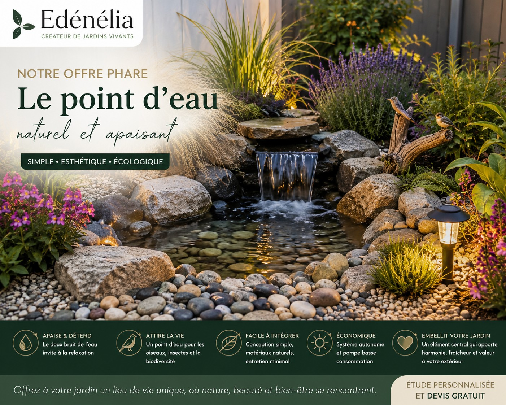

✨ NOUVEAUTÉ ✨

🌿 Edénélia fête sa première année !
Créée le 1er octobre 2025, Edénélia fête sa première année !
Un an aux côtés de nos clients, qui ont su nous accorder leur confiance pour chacun de leurs projets.
Edénélia a débuté son aventure en se consacrant principalement au désencombrement chez les particuliers, avant de développer très rapidement ses activités pour répondre toujours mieux aux attentes de ses clients.
Aujourd'hui, nous sommes fiers de pouvoir vous accompagner dans la création et l'entretien de vos espaces extérieurs.
Bien plus qu'un métier, c'est une véritable passion ! 🌿
Edénélia · Quimper et ses environs
Un extérieur
qui vous ressemble
Des espaces soignés, harmonieux et agréables à vivre.
Demander un devisNos valeurs
Un engagement au quotidien pour vos espaces et votre cadre de vie.
Un travail soigné
Une écoute attentive
à vos besoins
Des solutions durables
et adaptées
Une proximité
à Quimper et ses environs
Ils nous font confiance
Les témoignages seront publiés avec l'accord de leurs auteurs.
Un projet ?Parlons-en simplement.
Nous contacter